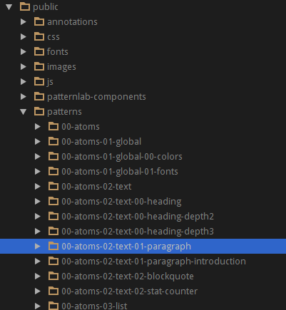

navitia.io
×
Pattern Lab
Retours d'expérience
by Thomas Noury / @is06
Vous allez voir quoi ?
- Pourquoi on a utilisé Pattern Lab
- Les maquettes navitia.io
- Le fonctionnement de l'outil
- Faire du design un bundle
- Développements pour la productivité
- Pistes d'amélioration
Pourquoi ce truc ?????
Ça aide à s'organiser
L'interface permet d'avoir un catalogue de composants réutilisables
Les patterns peuvent en inclure d'autres
On peut visualiser du responsive design facilement
L'outil peut réunir designer et intégrateur
Les maquettes navitia.io
Pensées en composants
Responsive et "mobile first"
Le fonctionnement du bousin
On développe les patterns dans source
On compile et tout est généré dans public
php core/console --generate
TADAA !
Et dans l'outil...

Faire du design un bundle
Similitudes entre PLab et un bundle Symfony
Le CSS est déjà dans public ! \o/
Quand on génère le design, le CSS est copié depuis le répertoire source vers public
C'est déjà géré par Pattern Lab, on en profite !
Développements pour la productivité
Conversion des twig
Commande : design:pattern:import
{% include 'atoms-logo' %}
{% include 'CanalTPNavitiaIoDesignBundle:Patterns:atoms/logo.html.twig' %}
Puis copie vers views/Patterns
Automatiser et watcher
compass compilephp core/console --generatephp app/console design:pattern:import
Traductions
On a réinventé la roue... enfin presque !
$filter = new Twig_SimpleFilter("trans", function ($id, $vars,
$context = 'translations',
$locale = 'en') {
// Un peu de code ici
return $text;
});
On les stocke au même endroit que dans un bundle
On utilise le filtre trans comme d'hab
{% include "molecules-section-header" with {
"title": "features.title"|trans({}, "homepage"),
"description": "features.subtitle"|trans({}, "homepage")}
%}
* Ça ne gère juste pas encore les %variables%
Autres fonctions
- asset
- path
- ...
Pistes d'amélioration
- Convertir le sous-module en composant géré par Composer
- Peut-être décorreler l'outil du design
- ... des idées ?
Almost done
Des questions ?